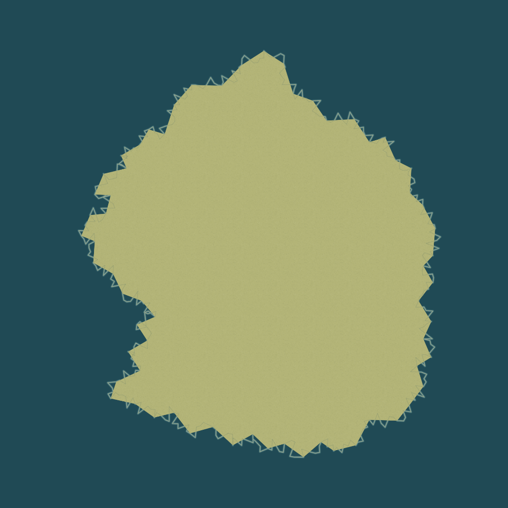
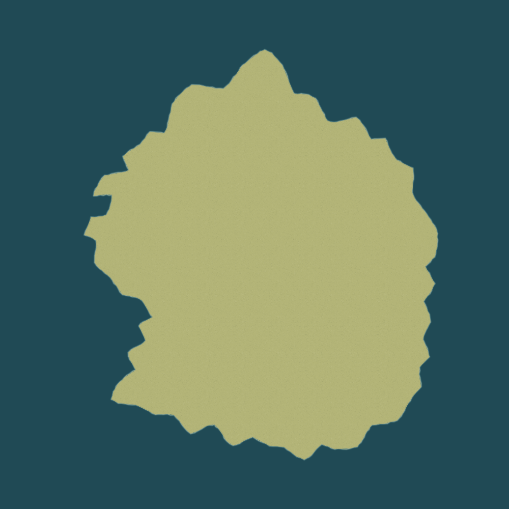
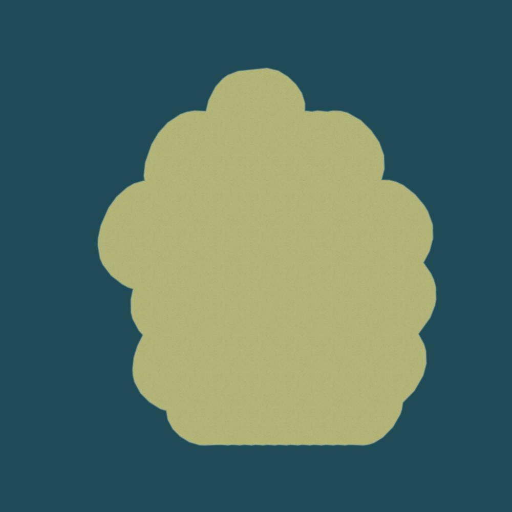
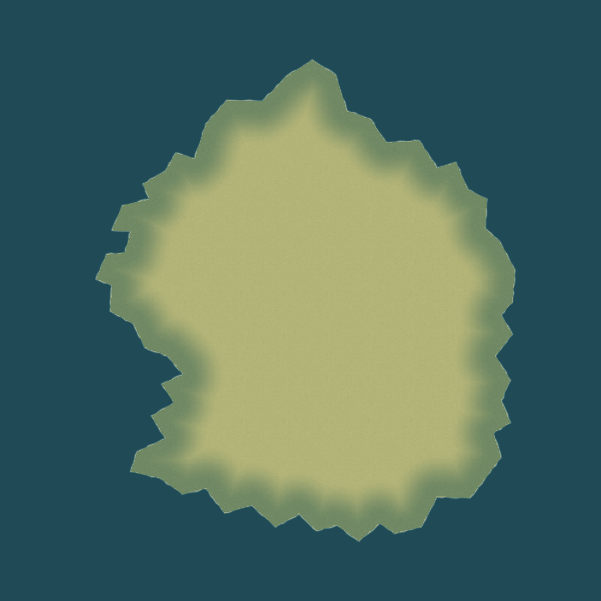
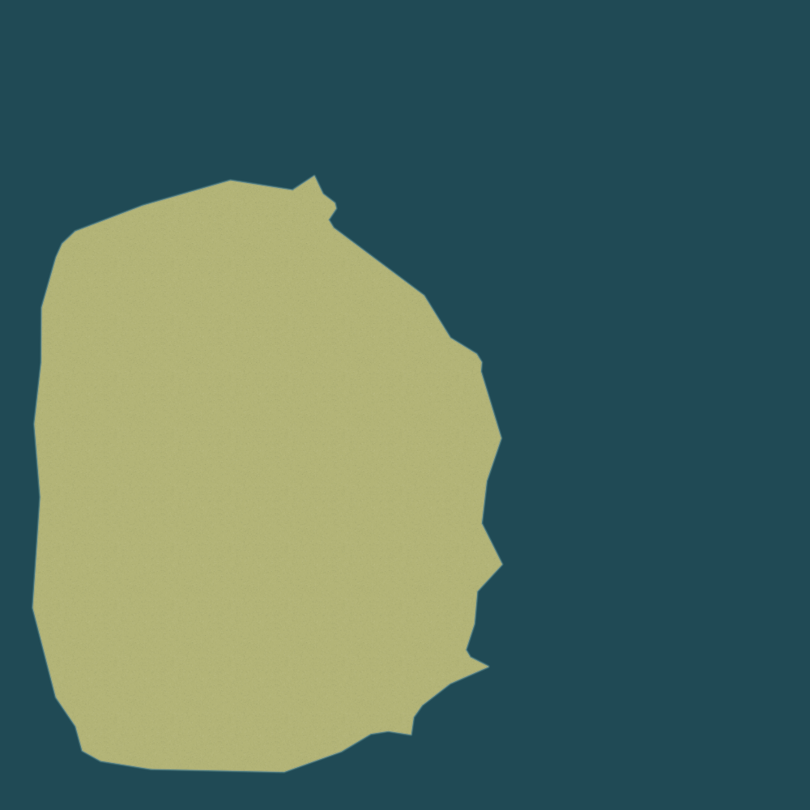
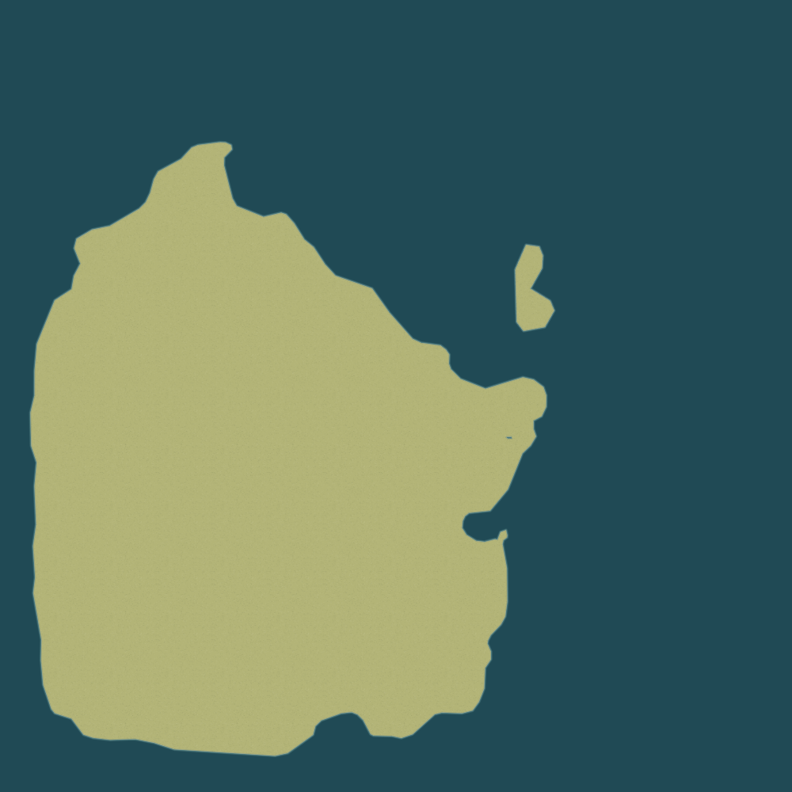
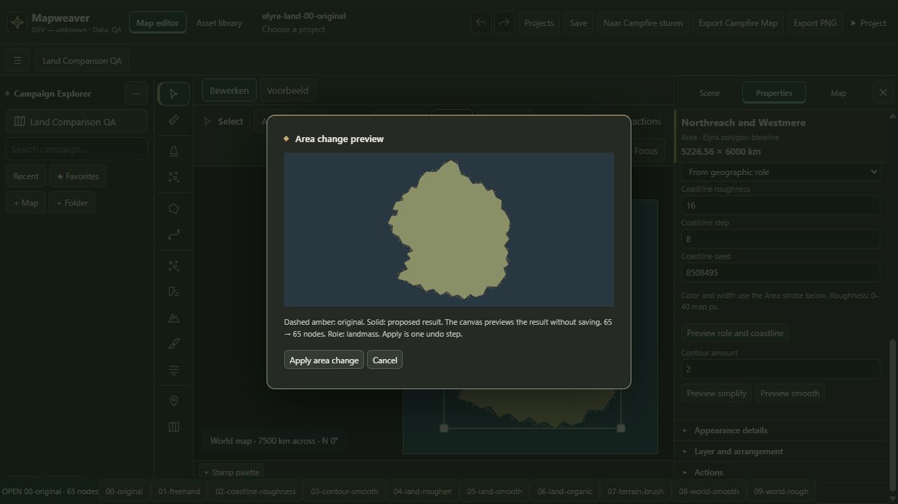
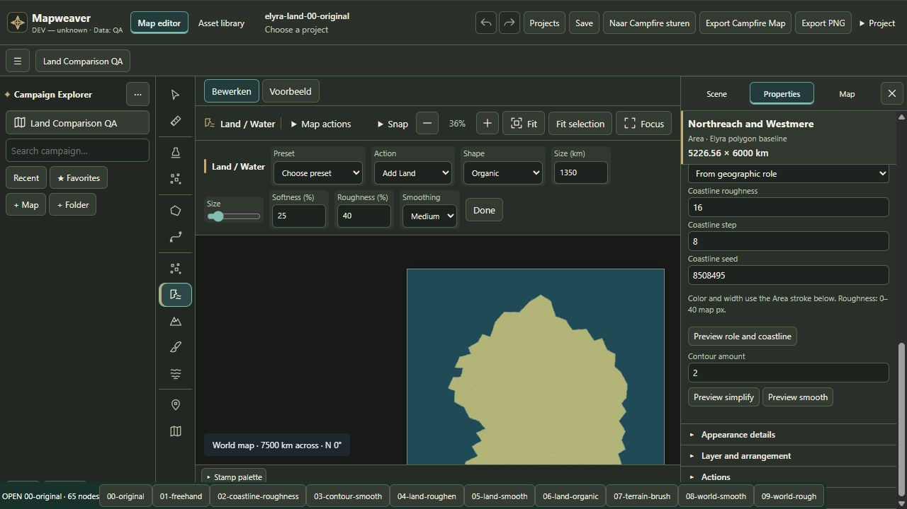

00-original — Elyra polygon baseline
65 nodes · IoU 100.00% · Δ area 0.000%
Conclusie: primaire oorzaak was gereedschapskeuze en onvoldoende authoring. Organische Land-geometrie bestaat al; visuele stroke-roughness vervormt de landvulling niet.
Volledig rapport · Geometriemetingen · Validatie / exporthashes
Alle beelden hieronder zijn ongewijzigde native Download PNG-resultaten. De rapportpagina vergelijkt ze uitsluitend in de browser; zij is geen kaartexport. Generatorcontroles 08/09 zijn bewust andere landmassa's.
65 nodes · IoU 100.00% · Δ area 0.000%
64 nodes · IoU 99.99% · Δ area -0.006%
65 nodes · IoU 100.00% · Δ area 0.000%

65 nodes · IoU 95.04% · Δ area -1.811%
116 nodes · IoU 97.86% · Δ area 0.071%
127 nodes · IoU 97.84% · Δ area 0.052%

120 nodes · IoU 90.33% · Δ area -5.019%

65 nodes · IoU 100.00% · Δ area 0.000%

44 nodes · IoU 36.71% · Δ area -9.241%

140 nodes · IoU 38.08% · Δ area -6.563%

De Coastline-preview behoudt 65 → 65 nodes; Land / Water biedt de echte geometrieacties.

